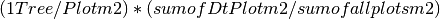

Welcome to the TPS documentation!¶
TPS (Tree, Plot, Stand) is a simple set of Python3 scripts for processing the TP001 dataset into the required Biomass ( Mg and Mg/Ha ), Jenkins Biomass ( Mg/Ha ), NPP ( Mg/Ha/yr ), Volume ( m3 ) , and Basal Area ( m2 ) outputs for live trees, dead trees, and ingrowth by individual tree, stand, species, and year.
Contents:
-
class
poptree_basis.Capture¶ Bases:
objectThis class contains dictionaries to be used in Stand computations for indexing the unique cases of minimum dbh’s, stand areas, and detail plot expansions. Stands interact with an instance of Capture when the default case of area 625 m2, minimum dbh 15.0 cm, detailPlot is False does not apply.
Here is a brief display of the common usage of Capture attributes within TPS.
Example: >>> import poptree_basis >>> A = poptree_basis.Capture()
>>> A.detail_reference.keys() >>> dict_keys(['AB08', 'AV14', 'AR07', 'RS01', 'TO11', 'AM16', 'AX15', 'RS29', 'RS02', 'RS30', 'RS28', 'TB13', 'RS32', 'AG05', 'TO04', 'AE10', 'RS31', 'PP17', 'AV06']) >>> A.detail_reference['AV14'].keys() >>> dict_keys([1984, 2000, 1990, 2008, 1978, 1995]) >>> A.detail_reference['AV14'][1984].keys() >>> dict_keys([1, 2, 3, 4, 5, 6, 7, 8, 9, 10, 11, 12, 13, 14, 15, 16]) >>> A.detail_reference['AV14'][1984][1] >>> {'detail': False, 'area': 625, 'min': 5.0}
>>> A.umins_reference['HR02'][1984][1] >>> 5.0
>>> A.uplot_areas['MH03'].keys() >>> dict_keys([1952, 1989, 1994, 1965, 1934, 1999, 1971, 2005, 1945, 1939, 1930, 1983]) >>> A.uplot_areas['MH03'][1952].keys() >>> dict_keys([1]) >>> A.uplot_areas['MH03'][1952][1] >>> 4047.0
>>> A.expansion['RS32'][2006] >>> 4.0
METHODS
A: in this example, an instance of the Capture class. A.detail_reference.keys(): the standids that contain detail plots for at least 1 plot in 1 remeasurement. A.detail_reference.[standid]: the years that standid contains at least 1 detail plot A.detail_reference.[standid][year]: the plotnos on that stand and year when at least 1 plot is a detail plot A.detail_reference.[standid][year][plotno][‘detail’]: Boolean True or False if a detail plot on that stand and plot and year A.detail_reference.[standid][year][plotno][‘area’]: the area of that plot A.detail_reference.[standid][year][plotno][‘min’]: the minimum dbh on that detail plot A.umins_reference.[standid]: stands whose minimum dbhs in at least 1 year are not 15. A.umins_reference.[standid][year]: the plots on that stand and year when at least 1 plot has a minimum dbh that is not 15 A.umins_reference[standid][year][plotno]: the minimum dbh for that stand, plot, and year, which is not 15.0 A.uplots_areas[standid]: stands whose areas in at least 1 year are not 625 m2 A.uplots_areas[standid][year]: the plots on that stand and year when at least 1 plot has an area not 625 m2 A.uplots_areas[standid][year][plotno]: the area for the stand, year, and plot that is not 625 A.expansion[standid][year][plotid]: the expansion factor for the stand, year, and plot which will not be 1.0 -
condense_detail_reference()¶ Condenses the detail reference into a readable dictionary of expansion factors by plot
The expansion factor only applies to trees whose dbhs are greater than the minimum dbh (usually 5.0 cm) and less than the smallest dbh for the not-detail plots (usually 15.0 cm). The terms large and small are used casually throughout the program to refer to these size groups.
Example: Given stand attribute * (area of all plots / area of all detail plots) = Representative stand attribute
10 Mg Biomass in small trees on detail plots * (10000 m2 all plots / 2000 m2 detail plots) = 50 Mg Biomass on detail plots
Example: >>> H = poptree_basis.Capture() >>> H.expansion.keys() >>> dict_keys(['RS32', 'AG05', 'RS02', 'RS01', 'TO04', 'AV14', 'AR07', 'TB13', 'AE10', 'TO11', 'PP17', 'AM16', 'RS31', 'RS28', 'AB08', 'AX15', 'RS29', 'AV06', 'RS30']) >>> H.expansion['RS32'][2006] >>> 4.0
PROPERTIES
Capture.expansion: the name of the lookup table created, which can be referenced as an attribute of the Capture object.
-
contains_unusual_plots()¶ Creates a lookup table for stands, plots, and years which have areas other than 625 m2
While many of the plots have the same area, those that do not can be called from the database explicitly. It is then easier to add all the plots together to get the total area of the stand, or to apply this area to the individual trees per hectare method.
Example: >>> H = poptree_basis.Capture() >>> H.uplot_areas.keys() >>> dict_keys(['YBNF', 'GP04', 'CH10', ... >>> H.uplot_areas['GP04'][1957][1] >>> 4047.0
PROPERTIES
Capture.uplot_areas: the name of the lookup table created, which can be referenced as an attribute of the Capture object.
-
create_detail_reference()¶ Creates a reference for detail plots that any instance of Tree (called by tps_Tree) or Stand (calld by tps_Stand) can use.
Here is a case where the stand, year, and plot in question is NOT a detail plot.
Example: >>> H = Capture.detail_reference.keys() >>> dict_keys(['AB08', 'AV14', 'AR07', 'RS01', 'TO11', 'AM16', 'AX15', 'RS29', 'RS02', 'RS30', 'RS28', 'TB13', 'RS32', 'AG05', 'TO04', 'AE10', 'RS31', 'PP17', 'AV06']) >>> H.detail_reference['RS01'].keys() >>> dict_keys([1976, 1971, 1988, 2009, 1992, 2004, 1978, 1998, 1983]) >>> H.detail_reference['RS01'][2004][1]['area'] >>> 625 >>> H.detail_reference['RS01'][2004][1]['detail'] >>> False >>> H.detail_reference['RS01'][2004][1]['min'] >>> 15.0
Here is a case where the stand, year, and plot in question is a detail plot.
>>> H.detail_reference['RS01'][2004][3]['area'] >>> 625 >>> H.detail_reference['RS01'][2004][3]['detail'] >>> True >>> H.detail_reference['RS01'][2004][3]['min'] >>> 5.0
PROPERTIES
Capture.detail_reference: the name of the lookup table created, which can be referenced as an attribute of the Capture object.
-
create_unusual_mins_reference()¶ Creates a lookup for plots that do not have minimums of 15, but are not detail plots.
create_unusual_mins_reference queries the database to create a reference for plots where detailPlot is not ‘T’ and minimum DBH is not 15.
>>> H = poptree_basis.Capture() >>> H.umins_reference.keys() >>> dict_keys(['YBNF', 'SRNF', 'MRNA', 'CH10',... >>> H.umins_reference['PF28'][1959][3] >>> 10.0
PROPERTIES
Capture.umins_reference: the name of the lookup table created, which can be referenced as an attribute of the Capture object.
-
-
class
poptree_basis.LogRef(filename)¶ Bases:
objectThe LogRef class creates a log to map Exceptions to reasonable strings using a lookup table that is part of its namespace. It opens and protects a .csv file that contains the Tree or Stand ID, the exception number, the exception meaning, the year in question, and the calling function.
Example: >>> L = LogRef("fox_log_1.csv")
Warning
csv dependency. Recall that in Python3, csv has a different syntax than in Python < 3.
METHODS
-
createcsv()¶ Opens a .csv file to log exceptions given by the routine
>>> L=LogRef("fox_log_1.csv")
-
-
class
poptree_basis.YamlConn¶ Bases:
objectThis class connects to the YAML files containing the configuration to run the ptree program, including the database connection in the Config File and the Queries in the Query File.
Example: >>> A = YamlConn() >>> A.configfilename = "config_2.yaml" >>> A.config = <class 'dict'> >>> A.queries= <class 'dict'> >>> <pymssql.connection, pymssql.cursor> = A.sql_connect()
Warning
pymssql dependency. pymssql is required to connect to FSDB.
METHODS
-
lite3_connect()¶ Connects to the SQLite3 database
Configuration parameters are in config_2.yaml file.
-
sql_connect()¶ Connects to the MS SQL server database
Configuration parameters are in config_2.yaml file.
-
-
biomass_basis.as_biopak(woodden, dbh, b1, b2, b3, j1, j2, *args)¶ Generates biomass equations based on inputs of b1, b2, b3 and wood density for dbh, in cm.
Generates Jenkin’s biomass equations based on inputs of j1 and j2 for dbh, also in cm.
The BioPak method computes Biomass explicitly, rather than from volume. In most cases, the original output was in grams, but in this case, it is converted into Megagrams.
Woodden: wood density, Dbh: cm diameter at breast height B1: first biomass parameter B2: second biomass parameter B3: third biomass parameter J1: first Jenkins parameter J2: second Jenkins parameter Args: the remainder of arguments passed to the function, which are not called in this case
-
biomass_basis.as_chinq_biopak(woodden, dbh, b1, b2, b3, j1, j2, h1, h2, h3)¶ shapes a biomass equation based on inputs of h1, h2, h3, b1, b2, and b3, plus wood density onto the variable dbh which is for the dbh. uses pretty much all the inputs directly and calculates volume. chinquapin.
-
biomass_basis.as_compbio(dbh, parameter_rows)¶ shapes a biomass equation based on the inputs of b1, b2, and wood density onto the variable dbh which is the dbh. adds the components from each row in the table it needs. only works with a few trees.
-
biomass_basis.as_d2ht(woodden, dbh, b1, b2, b3, j1, j2, h1, h2, h3)¶ Generates biomass equations based on inputs of b1, b2, b3, h1, h2, and h3 and wood density for dbh, in cm.
Generates Jenkin’s biomass equations based on inputs of j1 and j2 for dbh, also in cm.
Woodden: wood density, Dbh: cm diameter at breast height B1: first biomass parameter B2: second biomass parameter B3: third biomass parameter J1: first Jenkins parameter J2: second Jenkins parameter H1: first height parameter H2: second height parameter H3: third height parameter
-
biomass_basis.as_d2htcasc(woodden, dbh, b1, b2, b3, j1, j2, *args)¶ Generates biomass equations based on inputs of b1, b2, b3 and wood density for dbh, in cm.
Generates Jenkin’s biomass equations based on inputs of j1 and j2 for dbh, also in cm.
Woodden: wood density, Dbh: cm diameter at breast height B1: first biomass parameter B2: second biomass parameter B3: third biomass parameter J1: first Jenkins parameter J2: second Jenkins parameter Args: the remainder of arguments passed to the function, which are not called in this case
-
biomass_basis.as_lnln(woodden, dbh, b1, b2, b3, j1, j2, *args)¶ Generates biomass equations based on inputs of b1, b2, b3, and wood density for dbh, in cm.
Generates Jenkin’s biomass equations based on inputs of j1 and j2 for dbh, also in cm.
Woodden: wood density, Dbh: cm diameter at breast height B1: first biomass parameter B2: second biomass parameter B3: third biomass parameter J1: first Jenkins parameter J2: second Jenkins parameter Args: the remainder of arguments passed to the function, which are not called in this case
-
biomass_basis.as_oak_biopak(woodden, dbh, b1, b2, b3, j1, j2, h1, h2, h3)¶ shapes a biomass equation based on inputs of h1, h2, h3, b1, b2, and b3, plus wood density onto the variable dbh which is for the dbh. uses pretty much all the inputs directly and calculates volume. things in quercus family.
-
biomass_basis.maxref(dbh, species)¶ Check if given dbh and given species is bigger than the maximum for that combination. The max was found from determining the top 1 percent of dbh’s for each species.
Dbh: the tree’s dbh, in cm Species: the tree’s species, a four character code. If the database provides a longer code, it will be converted to a lowercase four letter code. Example: >>> maxref(20.0, 'ABAM') >>> "normal"
-
biomass_basis.which_fx(function_string)¶ find the correct function for doing the biomass in the lookup table
-
class
tps_Tree.Tree(cur, pcur, queries, tid)¶ Bases:
objectA Tree object contains the required metrics and functions to compute Biomass ( Mg and Mg/Ha ), Jenkins Biomass ( Mg/Ha ), Volume ( m3 ) , and Basal Area ( m2 ) for any one tree. Tree objects also create a check file for data quality.
Tree objects are independent of the years; that is, each Tree object contains all the years of that tree’s existance.
Example: >>> import tps >>> import poptree_basis >>> import biomass_basis >>> A = Tree(cur, 'NCNA001800216') >>> A.tid = 'ncna001800216' >>> A.cur = <pymssql.cursor> >>> A.tree_query= "SELECT <columns> from ..." >>> A.eqn_query = "SELECT <columns> from ..." >>> A.species = "TSHE" >>> A.state = [[1942, 16.0, '1', 'G'], [1945, 17.9, '1','G']] >>> A.eqns = {'normal' : lambda x :<function 039459x342>} >>> A.woodden = 0.44
METHODS
-
check_trees()¶ Performance checks on tree ‘state’
- A tree should not have more than one death
- A tree should not die and then re-appear
- A tree should not go missing and then re-appear
- A tree should not grow more than 30 percent between re-measurements unless it is smaller than 8.0 cm on the first of those measurements (because scaling)
- A tree should not decrease in size by more than 30 percent between re-measurements
- this method shouldn’t be called in the case where there is only one state
Intervals: are the string representation of the intervals between two measurements Tc: a dictionary of ‘tree checks’, referenced by the string containing the interval between two measurements
-
compute_biomasses()¶ Compute biomass, volume, Jenkins’ biomass and wood density from equations
If a tree is in it’s death year, the dbh from the previous measurement is used.
Example: >>> A = Tree(cur, pcur, queries, 'NCNA000100014') >>> A.state >>> [[1979, 47.5, '1', 'G'], [1981, None, '6', 'M']] >>> A.compute_biomasses() >>> [(1.2639, 2.8725, 1.14323, 0.44), (1.2639, 2.8725, 1.14323, 0.44)]
-
determine_detail_to_large()¶ Using the stand and the year, determine the weight of a detail plot by computing the sum of the areas of the detail plots versus the sum of the areas of all the plots

-
get_a_tree()¶ Retrieve a single tree and assign its species, standid, and plot; create a list of tuples for each year of its life. Gather the equations it needs to have its biomass computed.
-
is_detail(XFACTOR)¶ Returns true if the plot is a detail plot and the tree has a dbh which is less than 15 but greater than the minimum dbh listed. Otherwise, return false
XFACTOR: is an instance of the detail plot object, used for reference here. Standid: the stand of a tree object Plot: the plotid attribute of a tree object Dbh: the dbh attribute of a tree object Year: the year attribute of a tree object
-
output_tree(Bios, Details, Checks)¶ Writes 2 csv files, one containing the tree measurements for the individual trees and the second containing the checks about status
-
-
class
tps_Stand.Stand(cur, pcur, Xfactor, queries, standid)¶ Bases:
objectStands contain several plots, grouped by year and species. Stand produce outputs of biomass, volume, jenkins, trees/ha, and basal areas per hectare. Also, a number of checks are performed.
- “Tree in remeasurement not in master” - a tree id appears in one measurement not in the former
- “Tree in master not remeasured” - a tree id disappears from one measurement to the next
Example: >>> A = Stand(cur, pcur, Xfactor, queries, 'NCNA') >>> A.state >>> [[1979, 47.5, '1', 'G'], [1981, None, '6', 'M']] >>> A.compute_biomasses() >>> [(1.2639, 2.8725, 1.14323, 0.44), (1.2639, 2.8725, 1.14323, 0.44)]
-
check_mort()¶ Check if the year is a mortality year, and if so, bisect it into the subsequent live year
-
compute_normal_biomasses(Xfactor)¶ Compute the biomass, volume, jenkins. Use for “normal” stands.
First use X factor to tell if a fancy computation needs to be performed.
Xfactor: a Capture object containing the detail plots, minimum dbhs, etc. Xfactor.detail_reference: plots which are detail plots and when Xfactor.stands_with_unusual_mins: plots which have minimums that are not 15 and are not detail plots Xfactor.unusual_plot_areas: plots whose areas are not 625m
-
compute_special_biomasses(Xfactor)¶ Compute the biomass, volume, jenkins. Use for stands with alternate minimums, areas, or detail plots
- First use the Capture object to tell if a fancy computation (i.e. get a special area, minimum, etc. needs to be performed.
- Load in the appropriate parameters for this computation. Separate “small” trees from “large” ones so that small ones can get the expansion factor. If they aren’t on a detail plot, this number will just be “1”.
Xfactor: a Capture object containing the detail plots, minimum dbhs, etc. Xfactor.detail_reference: plots which are detail plots and when Xfactor.stands_with_unusual_mins: plots which have minimums that are not 15 and are not detail plots Xfactor.unusual_plot_areas: plots whose areas are not 625m
-
get_all_trees()¶ Get the trees and sort them by year, plot, live or dead, and species
-
select_eqns()¶ Get only the equations you need based on the species on that plot
Queries the database for individual species that will be on this stand and makes an equation table
-
update_mort(is_mort)¶ Returns a new dbh dictionary for the stand based on whether or not a year is a mortality year. If it is not a mortality year, the dictionary is the same as the original. If it is a mortality year, the dead trees are shifted to the subsequent year.
The bisect right function determines the windowing years from a given list around a given input year.
List_of_live_years: a list of years when checks were performed that were not mortality only Dead_year: the year of the mortality check to be aggregated to a selection from list_of_live_years Is_mort: Boolean value of whether or not we should update mortality. If it was not a mortality year, we shifted the original output into the shifted dictionary using check_mort, without changing a value!
-
write_stand_dead(Biomasses)¶
-
write_stand_ingrowth(Biomasses)¶
-
write_stand_live(Biomasses)¶